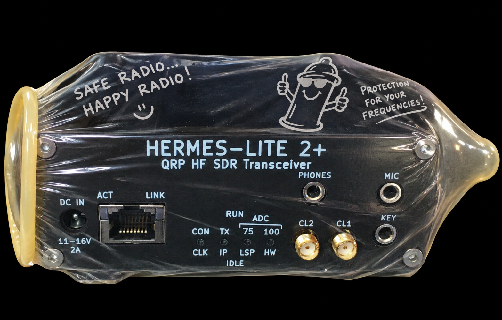

Shift, Tone, Decode. A 64-bit Windows digimode console for a TCI radio.
Sending Transmittal Disease
The real expansion is Shift, Tone, Decode. Around the shack it also answers to Sending Transmittal Disease, because this build is still in the contagious stage. It keys on the bench, it has not finished making the rounds, and the recommended treatment is another shot of bourbon while the modes get proved on the air.
STD: Help keep the infections spreading and buy us a shot of bourbon.
Windows installer · STD-Setup-0.1.2.exe · not a zip · 64-bit · Qt 6.11.1 MSVC · CW stays in Lyra

Caught on the bench
20 m FT8 on receive, the same session on the air, and a Feld Hell test that actually looks like letters.


What it sends
TX sends these when you press TX or Tune. Opening the radio does not key. The text command START is never sent.
📡 FT8, FT4, FT2
FT8 is 15 s, FT4 is 7.5 s, FT2 is 3.75 s. DIGU. The MSHV generator. Contest lines Tx1–Tx6 are messages, not extra modes. The line that goes out next is a green biohazard sign.
📡 JT65
JT65A, JT65B, and JT65C. 60 s. DIGU. Tone 0 stays near 1270 Hz. B and C use a wider tone spacing than A.
📡 Q65
Q65A, Q65B, Q65C, and Q65D. 30 s. DIGU. The tone follows the cursor. B, C, and D use a wider tone spacing than A.
📻 JS8
One row, JS8 Normal. JS8Call-improved, 15 s, 50 Hz, on the cursor. The screen is band activity, the conversation, and call activity, with HB, CQ, Reply, SNR?, INFO?, STATUS?, GRID?, Directed, and Deselect. Heartbeat, CQ, and directed frames go out at the next 15 s period. A longer message continues on the following periods. Fast, Turbo, Slow, and Ultra are not on the menu.
🌐 WSPR
One row, WSPR-2 from WSJT-X and JTDX. Even UTC minutes. Tx power, Tx Pct, and band hopping. The locator is the one in Options → User. Receive titles stay above the scrolling rows: Time, dB, DT, Frequency, Drift, Call, Locator, Report. Rows stay in the receive colour, and a rule separates the periods.
🖋️ Hell
Feld Hell, Slow Hell, Feld Hell X5, Feld Hell X9, FSK Hell, FSK Hell-105, and Hell 80, each at its Fldigi column rate. Feld Hell is 17.5 columns/s. A raised-cosine edge, then the envelope is limited to the 245 Hz channel. The marker is centered on the carrier. Reverse video flips the tape. Hell notes.
⌨️ RTTY
One row. Shift, Baud, Shape, Reverse, and ITA-2 sit on the transmit pane. Shape is on, Reverse is off, and ITA-2 is off. 45.45 baud and 170 Hz are selected. Mark is high unless Reverse is on. 5 bits, 1.5 stop. A space sends LTRS, then the space.
〰️ PSK
PSK31, PSK63, PSK125, PSK250, PSK500, and PSK1000. BPSK at 31.25, 62.5, 125, 250, 500, and 1000 baud. A zero reverses the phase. Squelch and AFC are on the status strip. AFC stays off until you turn it on.
〰️ QPSK
QPSK31, QPSK63, QPSK125, QPSK250, and QPSK500. K=5 convolutional code, one dibit per varicode bit. 8PSK is not on the menu.
🎼 Olivia
4/250, 8/250, 8/500, 16/500, 16/1000, and 32/1000. Gray-coded tones, centered on the cursor.
🎼 Contestia
The same six rows as Olivia, with the Contestia scramble. Capitals on receive.
🎚️ MFSK
MFSK4, MFSK8, MFSK11, MFSK16, MFSK22, MFSK31, MFSK32, MFSK64, MFSK64L, MFSK128, and MFSK128L. The L rows use the long interleaver.
🎚️ DominoEX
DominoEX Micro, 4, 5, 8, 11, 16, and 22. Eighteen-tone incremental keying. FEC is off. Micro is 2 baud.
🎚️ Thor
Thor 4, 5, 8, 11, 16, and 22 are K=7. Thor 25x4, 50x1, 50x2, and 100 are K=15. Thor Micro is not in this build.
🌊 MT63
MT63-500S, MT63-500L, MT63-1000S, MT63-1000L, MT63-2000S, and MT63-2000L. Sixty-four carriers and a Walsh code, short or long interleave, centered on the cursor.
📝 Macros
Supports importing Fldigi custom macros. Name, QTH (station city), Antenna, and Power under Options → User fill the matching tags. An empty box erases the tag. Macro notes.
Receive only
🗞️ WEFAX-576
IOC 576, 120 lines per minute. Stations are listed by ITU region, with NOAA hours on the frequencies that have them. A click sets the dial 1.9 kHz under the assigned frequency, USB, marker 1900 Hz. Start, a left-edge click, Auto save, Open folder, and Fit are on that screen. TX does not send this mode, and START is never sent.
Spots, the log, and a copy of your settings
None of these key the radio, and none of them send START.
🌐 WSPRnet
Options → Network Configuration. Off and On. On posts each WSPR station STD decodes. Off posts nothing. No password. It does not post your own transmission. The reports page lists stations reported by the callsign in Options → User.
🗺️ PSK Reporter
Upload stays off until Enable is checked. Antenna is the description sent with each spot. Also send WSPR spots to PSK Reporter stays off until that box is checked. The map uses the callsign already saved under Options → User. There is no second callsign.
📒 GridTracker
Options → Log Options. A UDP option sends live decode packets, the same packets GridTracker reads, to the saved host and port. The first address is 127.0.0.1 port 2237. UDP stays off until you enable it.
💾 Backup and export
File → Backup settings saves layouts and the callsign and locator already stored under Options → User. It does not copy the TCI host or port. File → Import settings restores that file. File → Backup logbook copies the ADIF file. File → Export ADIF writes a copy another logger can import.
Still spreading
Not on the Mode menu. They do not key. CW stays in Lyra.
✳️ 8PSK
A different constellation from QPSK. Not on the menu.
✳️ Thor Micro
Not in this build. Thor 4 through 100 are on the menu.
📻 JS8 speeds
Fast, Turbo, Slow, and Ultra are a different symbol clock. Only Normal is on the menu.
📋 FLD-88
On the list. Not in the menu.
📡 Other MSHV modes
MSK144, MSKMS, JTMS, FSK441, FSK315, ISCAT-A, ISCAT-B, JT6M, and PI4. Listed in the MSHV notes until they are implemented. JT65 and Q65 are already on the menu.
Companion apps
Same shack, same developer. STD is the digimode console. The other two already have their own waiting rooms.
🎛️ Lyra
The transceiver. Protocol 1 and Protocol 2, the panadapter, and the CW that stays over there. STD does not send CW.
Visit Lyra ★ GitHub📒 SDRLogger+
The logbook. TCI, the DX cluster, and the place a finished contact belongs.
Visit SDRLogger+ ★ GitHubCredits
Rick Langford (N8SDR) — author of STD, and of the bourbon prescription.
Modem math rewritten from Fldigi (Dave Freese, W1HKJ, GPL-3). FT8, FT4, FT2, JT65, and Q65 from MSHV (Christo, LZ2HV). TCI ideas from TCIdigi, without vendoring that tree. CW stays in Lyra.
STD is GPL v3.
☣ And Untreated!
Safe radio
Practice safe radio. Wrap your connectors.
